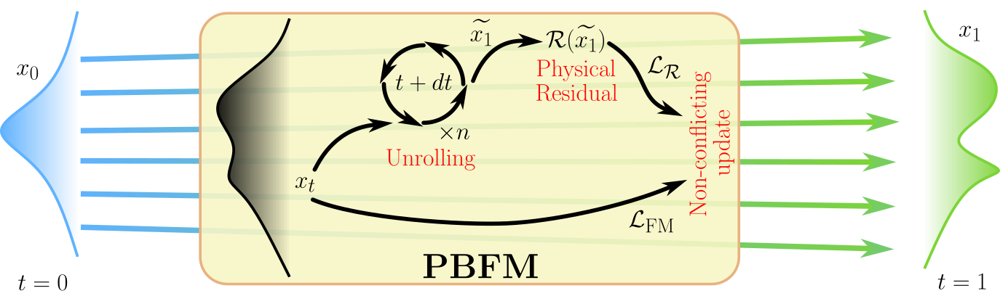

Flow Matching Meets PDEs - A Unified Framework for Physics-Constrained Generation
G. Baldan, Q. Liu, A. Guardone, and N. Thuerey
Generative machine learning methods, such as diffusion models and flow matching, have shown great potential in modeling complex system behaviors and building efficient surrogate models.However, these methods typically learn the underlying physics implicitly from data. We propose Physics-Based Flow Matching (PBFM), a novel generative framework that explicitly embeds physical constraints, both PDE residuals and algebraic relations, into the flow matching objective. We also introduce temporal unrolling at training time that improves the accuracy of the final, noise-free sample prediction. Our method jointly minimizes the flow matching loss and the physics-based residual loss without requiring hyperparameter tuning of their relative weights. Additionally, we analyze the role of the minimum noise level, σmin, in the context of physical constraints and evaluate a stochastic sampling strategy that helps to reduce physical residuals. Through extensive benchmarks on three representative PDE problems, we show that our approach yields up to an 8× more accurate physical residuals compared to FM, while clearly outperforming existing algorithms in terms of distributional accuracy. PBFM thus provides a principled and efficient framework for surrogate modeling, uncertainty quantification, and accelerated simulation in physics and engineering applications.
